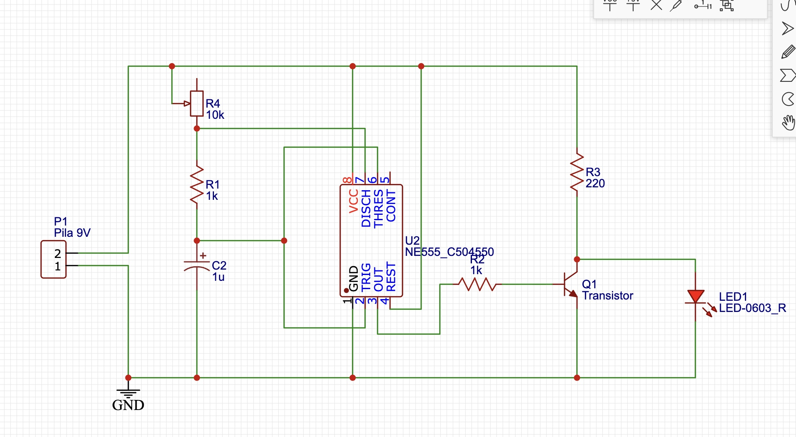
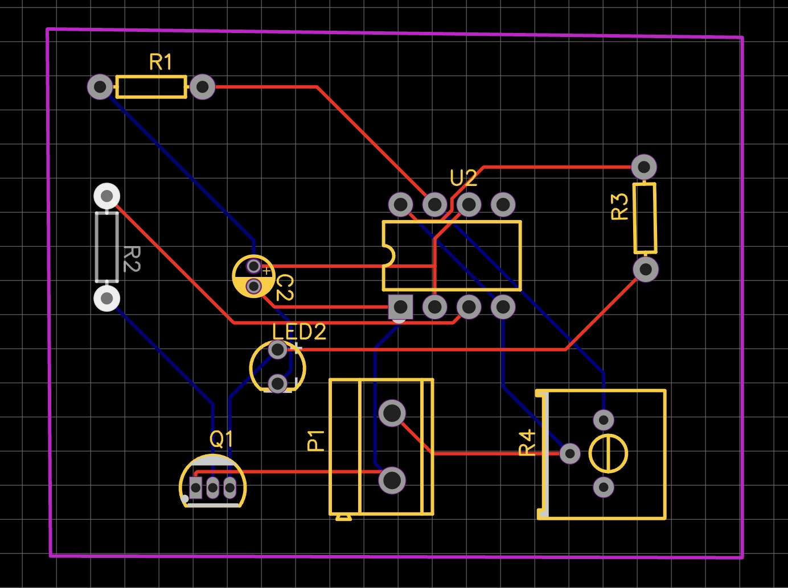
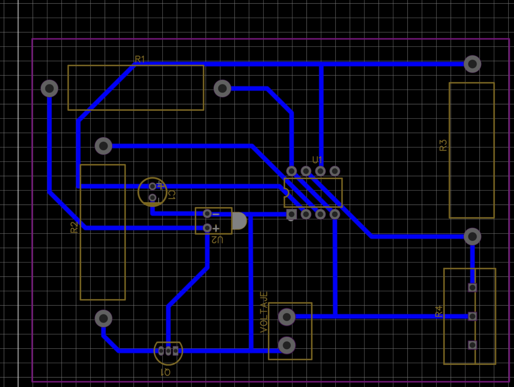
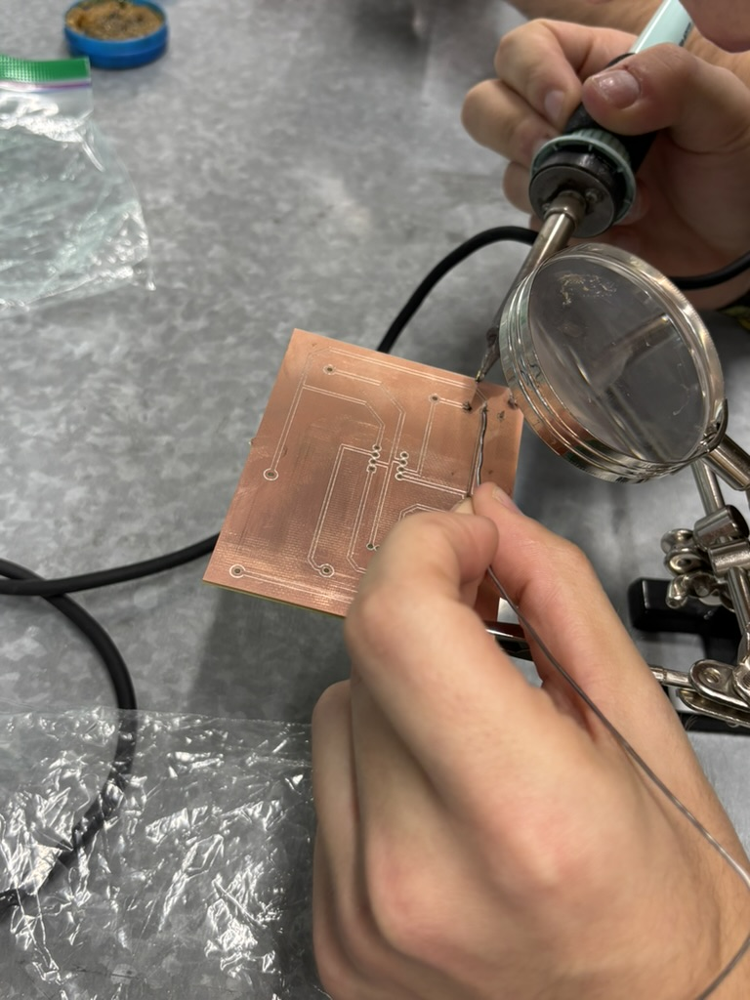
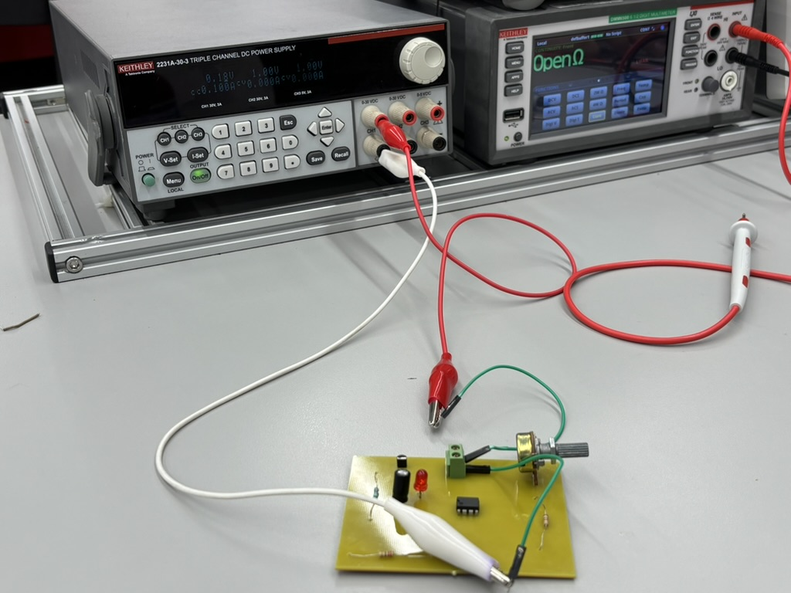
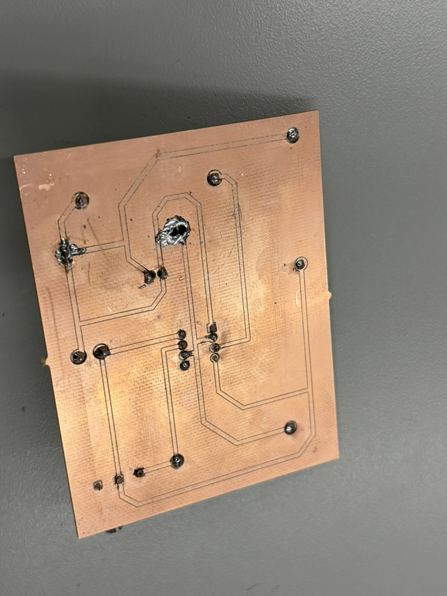
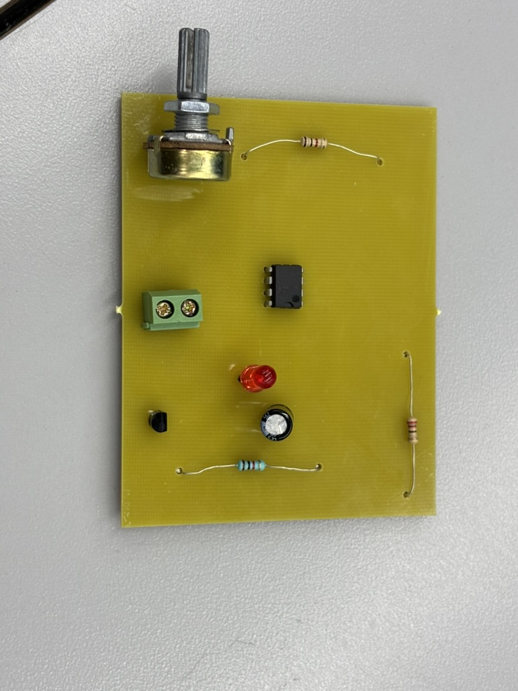

Este es el circuito simulado en TinkerCad sobre un protoboard el cual teniamos que recrear en un PCB, un PCB (en ingles, Printed Circuit Board) es una placa de cobre donde se montan componentes electricos y gracias a la conductividad de cobre y del estaño generan corriente entre ellos. En este simulador se puede observar los componentes utilizados y el circuito creado.
La página que usamos para crear el diseño en un archivo "Gerber" para hacer el corte sobre una placa de cobre se llama "EasyEDA", así se ve el circuito hecho en esta página web. 
Tras haber hecho el circuito, al generarlo en PCB con auto ruteo, la imagen se ve así:  La razón por la que mi diseño no funciona es por las dimensiones de los hoyos respectivos para los componentes, al ser pequeños no se pudo trazar una ruta que no incluya cables por fuera, es decir, una ruta con solo lineas azules.
El diseño al cual si le tenía fe de que iba a funcionar, era el de mi compañero Marcos, por lo que a la hora de cortar la placa de cobre, utilicé este diseño: 
A la hora de soldar, los componentes se estaban conectando bien unos con otros, esto lo se por la prueba de conectividad que realicé en los laboratorios de electrónica.  
El led desafortunadamente no prendió ya que el espacio establecido entre componentes y conectores era muy reducido, y al cometer un pequeño error y derramar demás el estaño, esta conectividad se vuelve nula. 
Al final, el resultado del PCB ya soldado se veía de esta manera, la oportunidad de mejora es bastante amplia, desde armar un diseño mejor para que los componentes tengan buen espacio entre ellos hasta aprender a soldar de una manera más eficaz. Para ser la primera vez que sueldo un PCB, considero que no fue un tan desastrozo trabajo. 